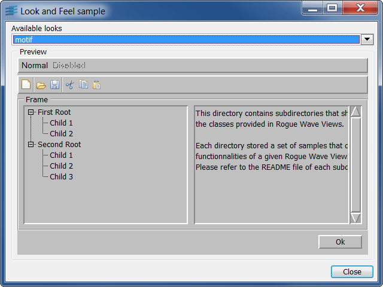

lookfeelThis sample shows how to create a new look and feel handler, and how to use it in an application.
This sample shows how to create a custom look and feel handler, that is, a way to make your application looks exactly the way you want. This custom look and feel handler extends the Windows 95 look and feel, and redefines the look of buttons and tree gadgets.
A combo box allows the user to choose between the available looks. A preview of the selected look is displayed by a gadget container that contains several gadgets.
IlvLookFeelHandlerIlvWindows95LFHandlerIlvBitmap